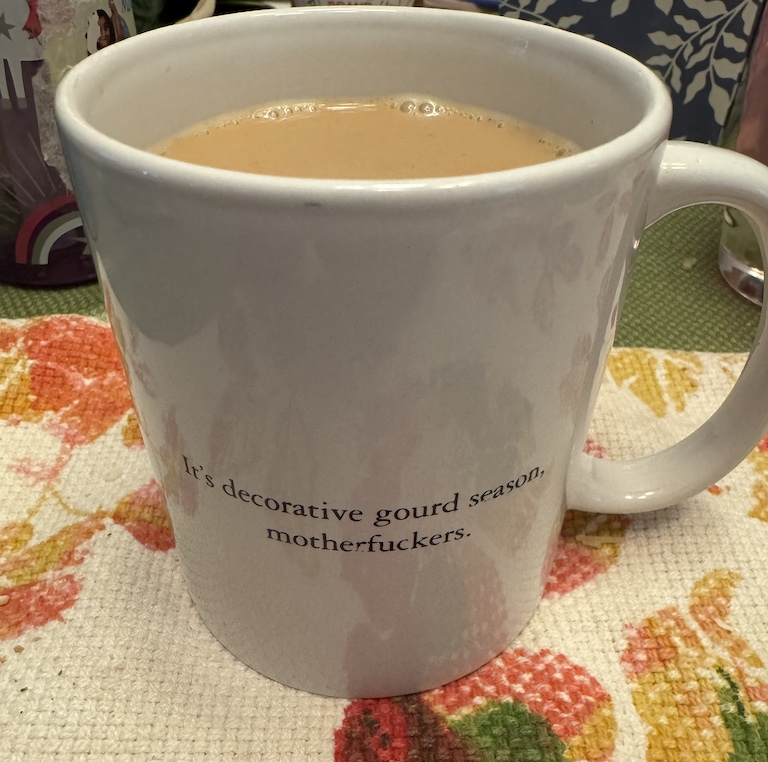
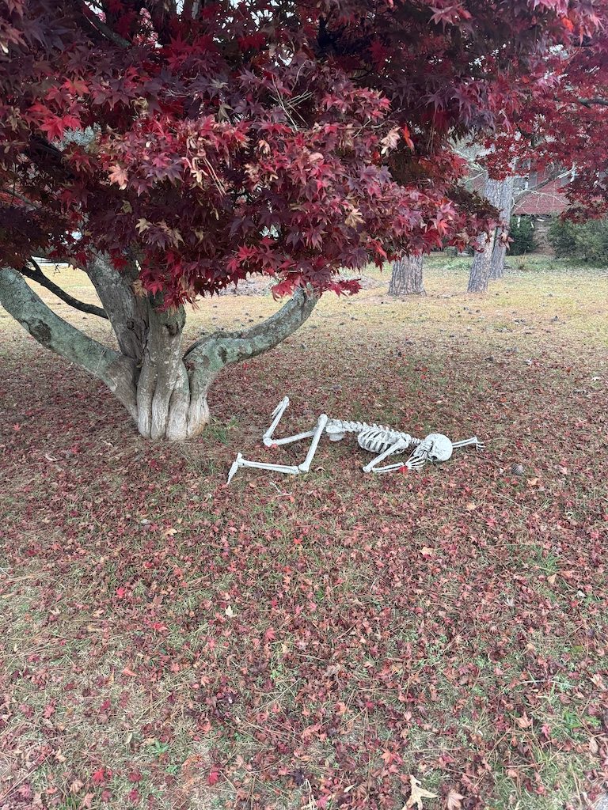

It was only in reading Mark Remy’s (aka the Dumb Runner) latest email digest yesterday evening that the realization suddenly hit full force: “holy eff, today is Festivus! Where has the time gone?!”
I wrote most of this last night but wasn’t able to finish (am currently with a lot of extended family, so there are a lot of different time pressures and obligations, and things are also changing very rapidly). It’s still pretty rough around the edges, but that’s mostly because the sentiments sometimes veer into raw territory, and I decided I didn’t care enough to take the time to smooth them out for general audiences. So consider the following:
Once more, for the folks in the cheap seats: there will be some very coarse language very frequently. There will also be some notes that are overly cynical or bellicose, veering well beyond hyperbolic. Almost all of what is here will be accurate, but for the sake of editorial emphasis I may stretch a sentiment or two. So if you’re taken aback by something, take a beat and consider that you may have stumbled on an instance of me just plain getting-it-out-of-my-system.
Without further adieu, then!
Welcome to Festivus, motherfuckers
First and foremost, fuck Connections that boil down to “[subject] minus a letter”. Seriously, I’m supposed to see the words “cya”, “whit”, and “brow” and think COLORS?! The fuck is wrong with you?? Go touch some grass you witles wonk.
Fuck fake friends whose flimsy façade flakes and fades before the finality of fearless fidelity. I watched a dear friend go through a massive life upheaval and, while she’s absolutely better off for it, she was shaken by how fragile so many of her friendships turned out to be. I empathized, seeing as how some of our friendships disappeared on a dime when our lives shifted. Who knew maintaining a 9-min mile easy pace was apparently a contingency for friendship?
(yeah I know you need an avalanche of advil but this is my blog, so suck it up)
FUCK you for adding an apostrophe to every FUCKING plural word. An apostrophe does NOT mean “watch out, here comes an ‘S’”! Jesus H Fuck. Go back to second grade, pull out your apostrophe key, throw it into a fire, and then jump in after it. You grammarless peasants. You popcorn-flicking footlickers. You eater of broken meat’s. You glass-gazin’g fini’cal ro’gu’es’’’’. DIE.
Fuck every single supporter of RFK Jr. out there. Yes, especially you: I saw your fucking yard sign; go fuck yourself and your “my immune system protects me” libertarian horseshit. RFK Jr has successfully identified real problems in our society and has decided their solution is to make them even worse. Morons of the highest order, every one of them, who think every complicated question has a two-bit answer. Burn in hell.
On that note: fuck people who think “politics” is something that ruins everything. “Politics” is everything; it’s how we put our values into action. And from what I can tell and see, your values fucking suck ass.
Fuck smart TVs. Honestly, fuck any appliance with “smart” in front of it. I don’t want my TV to be smart; I don’t want my kitchen to be smart; I don’t want my doorbell, my thermostat, or my light bulbs to be smart. I want them to be dumb as the appliances they are. Stop shoving internet connections into every fucking thing that has electrons flowing through it, because lord knows that eventually those electrons will be used to display ads, and LITERALLY NO ONE WANTS THAT.
Fuck the Left. Honest to God, fuck the entire Left. Your embrace of “complex villains” who literally wouldn’t blink before offing you is quite possibly the dumbest shit I’ve seen in a long time. I seriously wouldn’t have believed you were so susceptible to propaganda but I guess even bleeding hearts have their weak spots and man, did the terrorists find yours, you fucking vapid space cadets.
Related: fuck antisemites. I don’t care whether you wear a white sheet or lobby for universal healthcare, fuck you. You make my family, friends, and millions of other humans less safe; whether or not you’re in favor of something I agree with is entirely beside the point.
Fuck commercial flying. Every single step of the process is a fucking drag. Maybe it’s because flying for me involves a 90+ minute drive on both ends (which is a real “fuck you” at the end of a long trip, to finally land and then have yet another ~2 hours of travel yet to go), but whatever childhood romanticism that once colored my perception of it is long gone. Now it’s endless queues, pointless security theater, legions of people with negative spatial awareness, airborne sickness (yeah I still mask; turns out, it even works against garden-variety head colds, you fucking selfish bastards), exasperation, utter exhaustion, and consistent bare minimum payoff to ensure I keep doing it. Fuck you, especially for that last one.
Oh geez, FUCK AI. Seriously, it’s not even “artificial intelligence”; it’s artificial AI! Way to ruin a decades-long research field in the span of a couple years. Here, let’s boil the ocean to tell the internet it needs to put glue on pizza. Let’s implode the global economy to create a calculator that can add 2 and 2 and get 5. Let’s destroy the concept of shared reality and all common frames of reference to create endless 12-second videos of Sam Altman shoplifting (ok real talk, I laughed at the last one). Great job doing all the things I spent an entire career being taught NOT to do (build applications that span terabytes of memory just to run; use quadratic-scaling algorithms; leak memory like a sieve; use stacked nonlinearities that can’t be explained downstream; shrug your shoulders and abdicate responsibility for the systems you’ve built). Fucking bush league, but it’s being treated as the Second Coming. The emperor has no RAM, folks!
Fuck tech companies. I hate that I ever admired you. I hate that I considered you heroes and that I aspired to innovate like you. I hate that I associated you with solving the world’s problems; instead, you’ve chosen to become the world’s problems. You have everything, absolutely everything—you could solve world hunger if you wanted to. You could right social wrongs if you wanted to. Hell, you could ram through universal healthcare if you wanted to, reverse Citizens United, end political gerrymandering, ratify the ERA, play a crucial role in stabilizing inflation and creating a robust economy for generations. You have everything, and you use it for absolutely nothing. Fuck. You.
Thanks for paying for our residential solar panels, though! More of that “can-do” fix-it innovator ethos you bring to the table, I suppose.
Some other former personal heroes I’d like to give a hearty fuck you to. I’ll do that in person if I’m ever given the honor. Just know that once is an accident, twice is a trend, and three times is an asshole. So yeah, go fuck yourselves, assholes.
(don’t meet your heroes, kids)
Fuck fastholes. If you run, you’re a runner, and you’re awesome. Full stop (well, don’t stop, keep going! you’re doing great!).
Fuck the administrators of the institutions of higher learning who are caving to the whims of the troll farms, including the one in the White House. Yeah, I know I don’t really have a leg to stand on here given my recent departure from the academe, but I spent long enough in it and even longer tangential to it to know how absofuckinglutely critical it is to a healthy and functional society. It’s worth every perfectly-manicured campus bush to its name and should be fought for with every ounce of sweat and grit its gibbering, flawed administrators can muster. But so far I just haven’t seen it.
FUCK COMPUTERS. We should have left the silicon in the ground, Jesus tap-dancing Christ. If I had a nickel for every time I’d have been better off not fixing the problem and instead tossing my laptop out the nearest window, I’d have enough nickels to replace all the goddamn silicon with nickel so we’d have no functional computers BECAUSE THEY ALL SUCK! ASS!
Fuck billionaires, talking heads, corrupt politicians, useful idiots, armchair quarterbacks, diet culture warriors, people who refuse to introspect, drivers who don’t use turn signals, bigots, fundamentalists and “literalists”, climate change, and most of all: people who whine and bitch and moan on the internet. Seriously, fuck those people.

Citation
@online{quinn2025,
author = {Quinn, Shannon},
title = {It’s Decorative Gourd Season},
date = {2025-12-24},
url = {https://magsol.github.io/2025-12-24-its-decorative-gourd-season},
langid = {en}
}